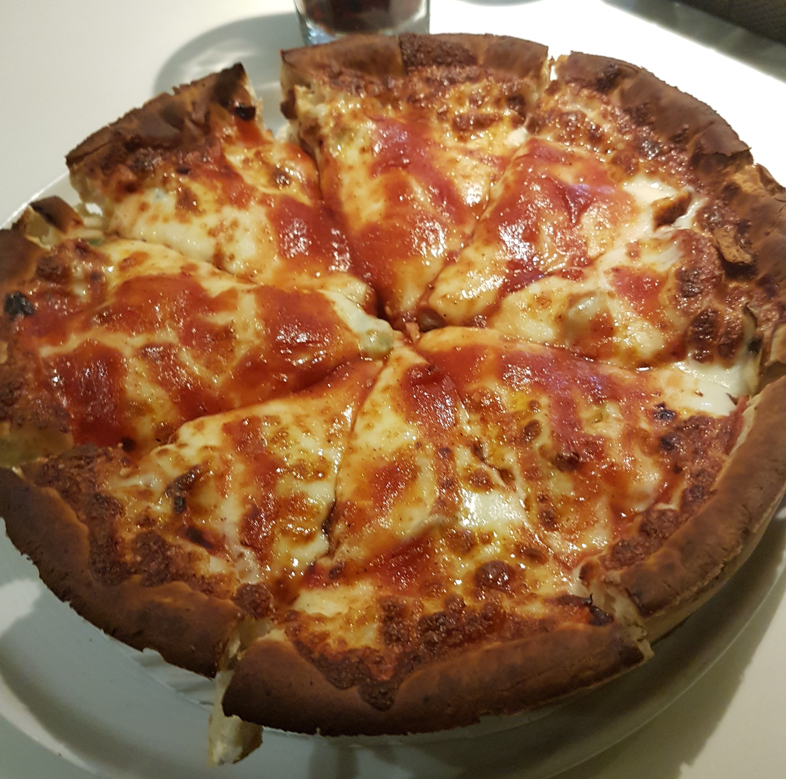
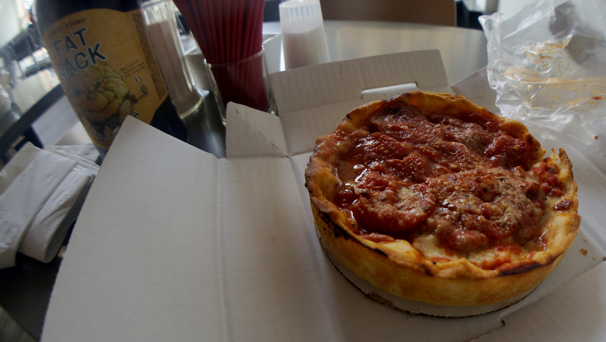
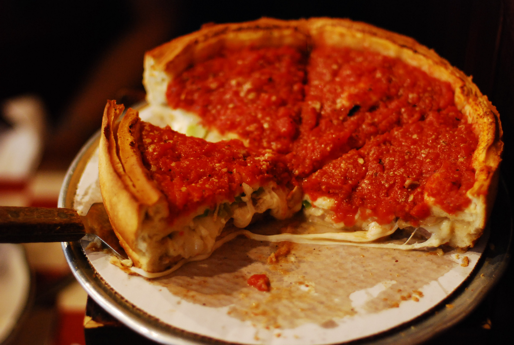
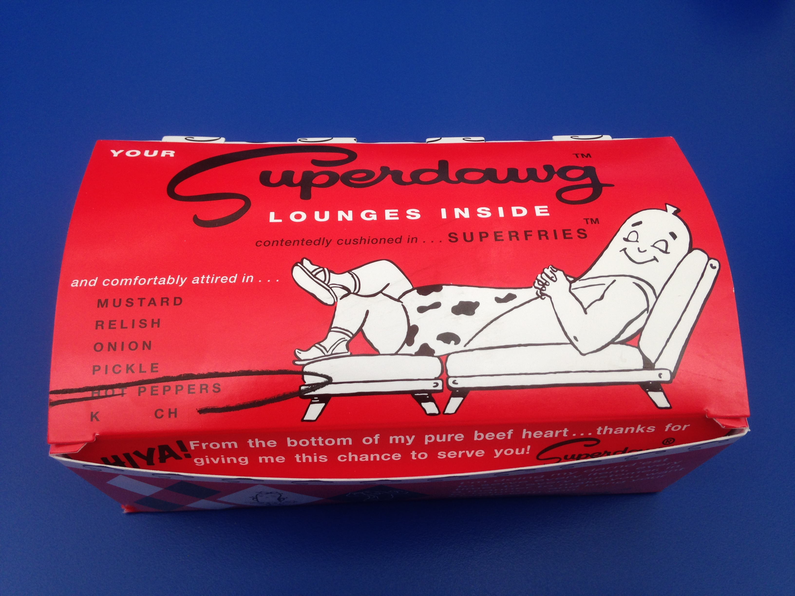
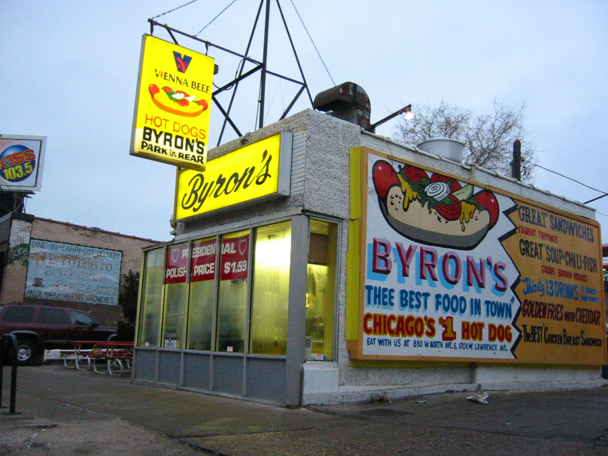
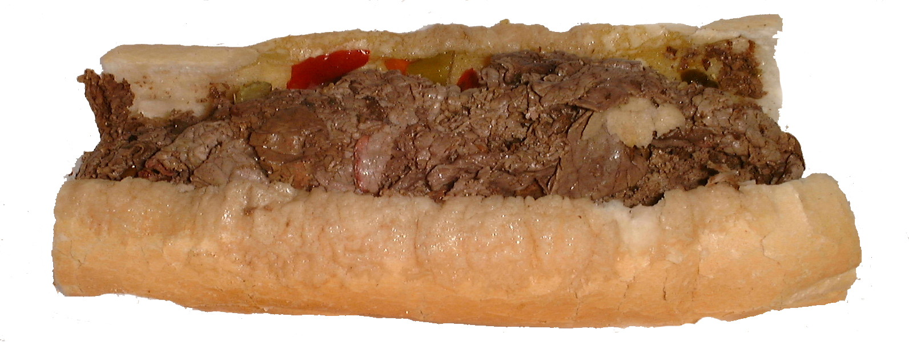
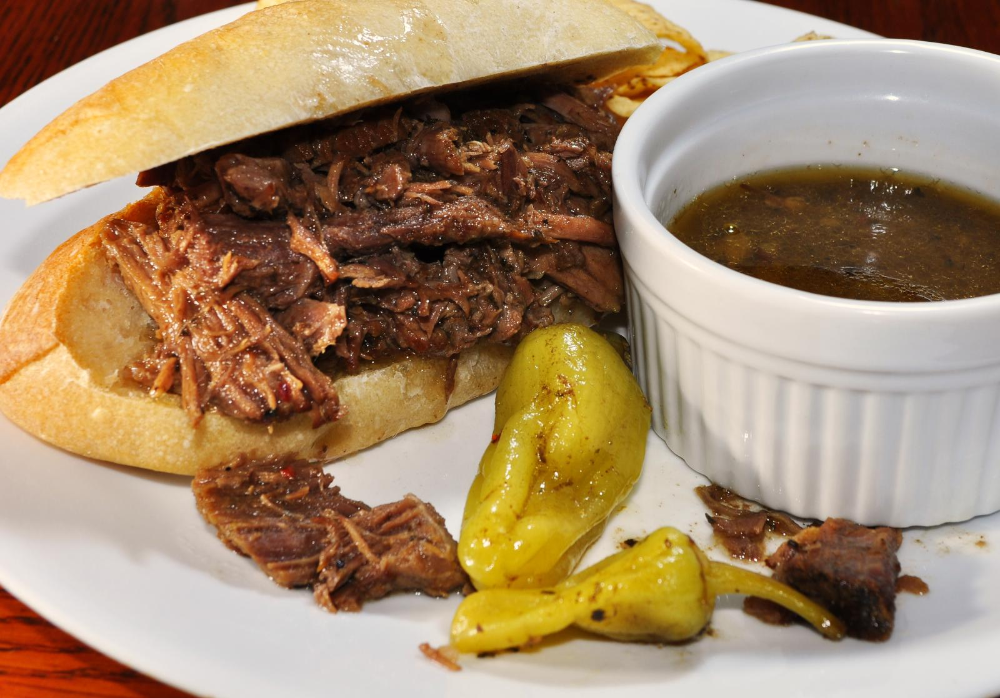
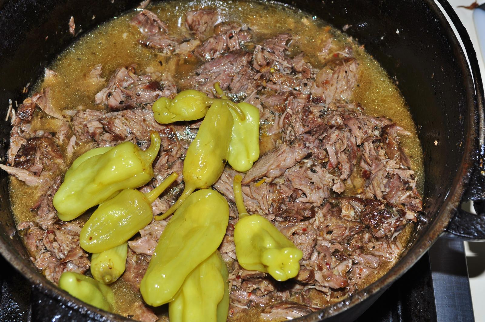

🥇 1위
Burt's Place
Morton Grove
포카치아를 닮은 크러스트로 유명한 곳입니다. 고(故) 앤서니 부르댕이 방문 후 극찬하면서 전국적인 명성을 얻었습니다.
사진: Wikimedia Commons (CC BY-SA 3.0) · 매장 실사진 아님Chicago Food Ranking
딥디시 피자, 시카고 스타일 핫도그, 이탈리안 비프 샌드위치. 음식별로 현지 매체와 여행 매체가 꼽은 맛집 순위 상위 3곳을 소개합니다.
📍 카드의 사진을 클릭하면 Google 지도에서 위치를 바로 확인할 수 있습니다.
출처: Chowhound - The 8 Best Deep Dish Pizzas In Chicago

🥇 1위
Morton Grove
포카치아를 닮은 크러스트로 유명한 곳입니다. 고(故) 앤서니 부르댕이 방문 후 극찬하면서 전국적인 명성을 얻었습니다.
사진: Wikimedia Commons (CC BY-SA 3.0) · 매장 실사진 아님
🥈 2위
1971년 개점
파이처럼 얇고 바삭하면서도 버터리한 크러스트가 특징입니다. 40년 넘게 같은 유제품 공급처의 신선한 모차렐라 치즈를 사용합니다.
사진: Aneil Lutchman, Wikimedia Commons (CC BY-SA 2.0)
🥉 3위
1974년 개점
이탈리아 토리노의 전통 레시피를 바탕으로 한 "스터프드 피자(stuffed pizza)" 스타일로 유명합니다.
사진: Wikimedia Commons (CC BY 2.0)출처: Time Out Chicago - 24 Best Hot Dogs in Chicago

🥇 1위
1948년 개업
1940년대 스타일을 그대로 유지한 드라이브인 핫도그 스탠드입니다. 유니폼을 입은 직원이 차창으로 음식을 직접 가져다줍니다.
사진: Wikimedia Commons (CC BY-SA 4.0)
🥈 2위
약 50년 전통
신선한 토핑과 바삭한 감자튀김이 특징인 오랜 전통의 핫도그 전문점입니다. 넓은 야외 좌석을 갖추고 있습니다.
사진: Wikimedia Commons (CC BY-SA 2.0)
🥉 3위
Sheffield
정석에 가까운 시카고 스타일 핫도그를 선보이는 곳입니다. 신선한 토핑과 정성스러운 조리 과정으로 호평받습니다.
사진: Wikimedia Commons (CC BY-SA 3.0) · 매장 실사진 아님출처: The Infatuation - The 11 Best Italian Beef Sandwiches In Chicago, Ranked

🥇 1위
1938년 개업
이탈리안 비프 샌드위치를 처음 만들었다고 알려진 전설적인 가게입니다. 비밀 레시피로 조리한 소고기와 부드러운 빵이 특징입니다.
사진: Wikimedia Commons (CC BY-SA 3.0) · 매장 실사진 아님
🥈 2위
Chicago
완벽하게 양념된 소고기와 달콤한 피망 조합이 돋보입니다. 국물 없이 드라이로 주문해도 충분히 맛있다는 평가를 받습니다.
사진: Wikimedia Commons (CC BY 2.0) · 매장 실사진 아님
🥉 3위
Little Italy
Al's와 가까운 위치에 있으며, 향신료 향이 진한 육수(jus)로 유명합니다. 별도의 실외 테이블에서 여유롭게 식사할 수 있습니다.
사진: Wikimedia Commons (CC BY 2.0) · 매장 실사진 아님